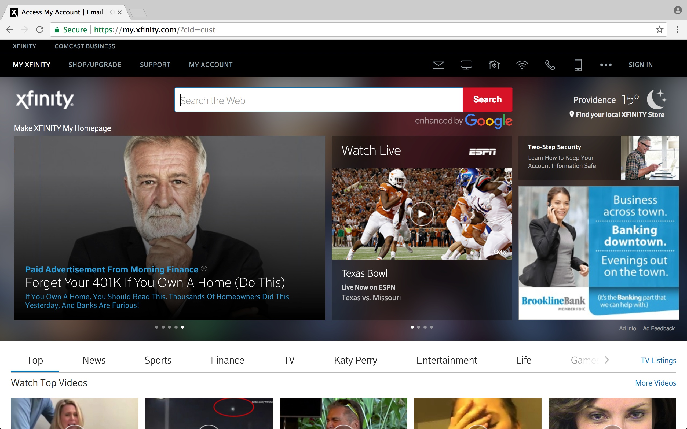
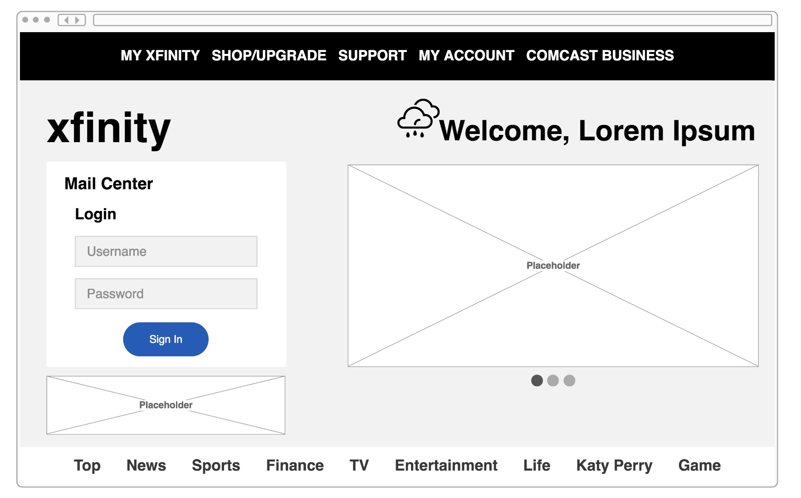
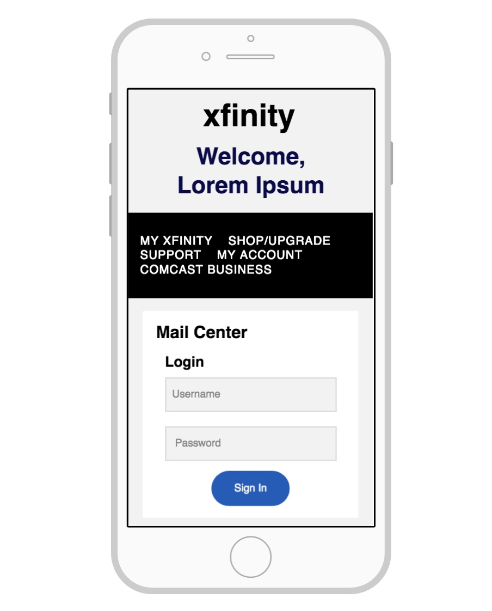
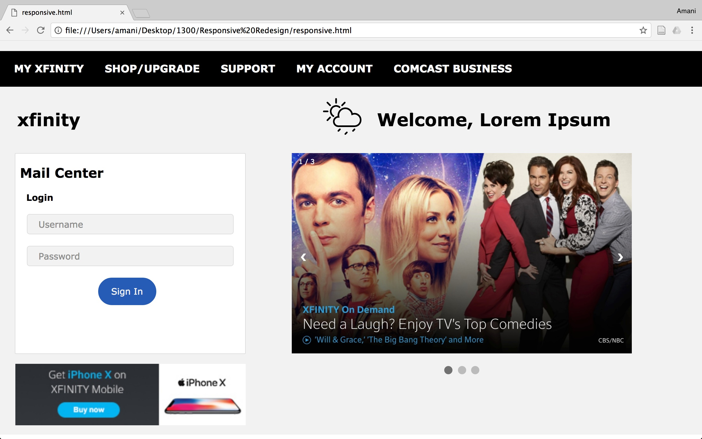

This project focused on finding an interface that lacked in its intended delivery, and was not responsive across platforms, and modifying the website using mockups, high fidelity designs, and a final website. Throughout the process a focus was kept on design principles acquired in a Brown University UI/UX course.
I was tasked with finding a website that demanded improvement, based on its desired use and usability across platforms. I setteld on comcast.net mail center. As noted in the chart above, I zeroed in on how difficult it was to locate the mailcenter on the current Comcast homepage, and set forth with the task to prioritize email and use across computer, iPad and iPhone.
Keeping in mind the intended use of the Comcast Mail Center, I applied important design principles including ease of learning, memorability, intuitive design, and efficiency of use to begin to produce wire frames for what would later become responsive site. I chose the 5 screens I found most important in the Comcast Mail experience, and redesigned them as low level mock ups. The mockups, shown below, then become the basis for the web version of my responsive site.
Using Proto.io, I created a high-fidelity mockup that displays the proposed responsiveness for computer, iPad and iPhone platforms.
In each of the mockups I ensured the centralization of the Mail Center, prioritizing the placement of the login features over other items
Overall, my responsive redesign focuses on prioritizing the mail center login at all times. As I am redesigning the screen for mail, I argue that the user’s focus should be drawn primarily to the mail center. As such, it is placed at the left in both Computer and iPad models, and takes presedence over the news slideshow in the iPhone version. I used vw (viewport width) so that my grid sizing was relative instead of static. When moving to an iPhone sized screen, it no longer seemed usable to have multiple columns, so I shifted my design to have a single column and had to make desicions about which features needed to come first in row order. As the page is primarily for mail, as stated before, the site name and the personalized welcome were the only items to take presedence over the mail center (which is still visible without scrolling). One must then scroll to see the news slideshow, and the bottom nav bar. The iPad view is a close replica of the Computer model, because it offers enough room for a user to have a large enough mail center and view the news slideshow at once. Since the top navigation bar would not fit on a single line, it gets deprioritized and granted two lines that come below the site and user introduction. All design decisions were made to prioritize mail on this comcast email interface.
